Koa Shala 요가
Jl. Danau Tamblingan 77A, Sanur
안다즈 발리↓ 도보 이동Koa Shala 요가
구글맵 도보 길찾기 ↗ 공식 안내 ↗일정부터 길찾기까지, 여행 중 필요한 정보를 한곳에.
숙소에서 출발하는 도보 길찾기입니다. 실제 경로와 소요 시간은 구글맵에서 확인하세요.
Jl. Danau Tamblingan 77A, Sanur
Jl. Retro Beach, Sanur Kauh · Mertasari Beach Front
Jl. Banjar Penestanan Kaja Gg. Pacekan No.18A, Sayan
가족이 함께 즐길 체험과 쉬어 갈 공간 · 공식 안내 확인 2026.10.12
Andaz Bali · 바닷가 수영장과 발리 문화 체험
Jalan Danau Tamblingan 89A, Sanur 80228
늦은 체크인 확인: 10월 31일 23:55 공항 도착 후 바로 객실을 쓰려면 10월 31일 밤 숙박 예약 또는 호텔과 합의한 새벽 입실 조건을 확인해야 합니다. 숙박 바우처가 없어 예약 시작일은 확인하지 못했습니다.
2 Twin Beds Deluxe
객실 51㎡ · 트윈 침대 2개 · 정원 전망 · 발코니 20㎡ · 욕조와 샤워 공간
숙박 인원 확인: 공식 디럭스 트윈 페이지의 최대 정원은 성인 2명 + 만 6세 미만 어린이 2명입니다. 우리 가족의 아이들(12·7세)은 이 조건에 해당하지 않으므로 실제 예약의 4인 투숙 승인·추가 침대·비용을 호텔에 확인하세요. 객실 사진과 이름은 예약하신 유형 그대로 유지했습니다.
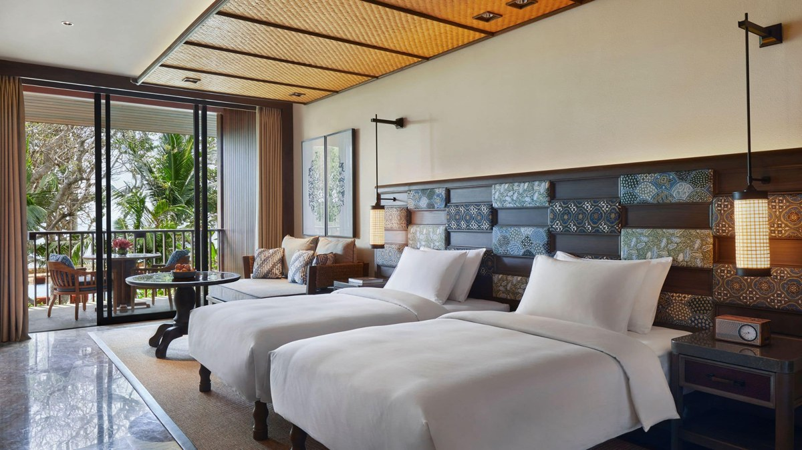
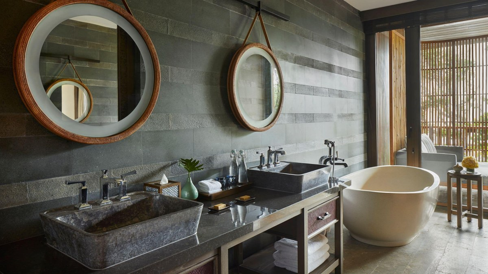
해당 객실 유형의 공식 대표 사진입니다. 실제 배정 객실의 배치와 전망은 달라질 수 있어요.
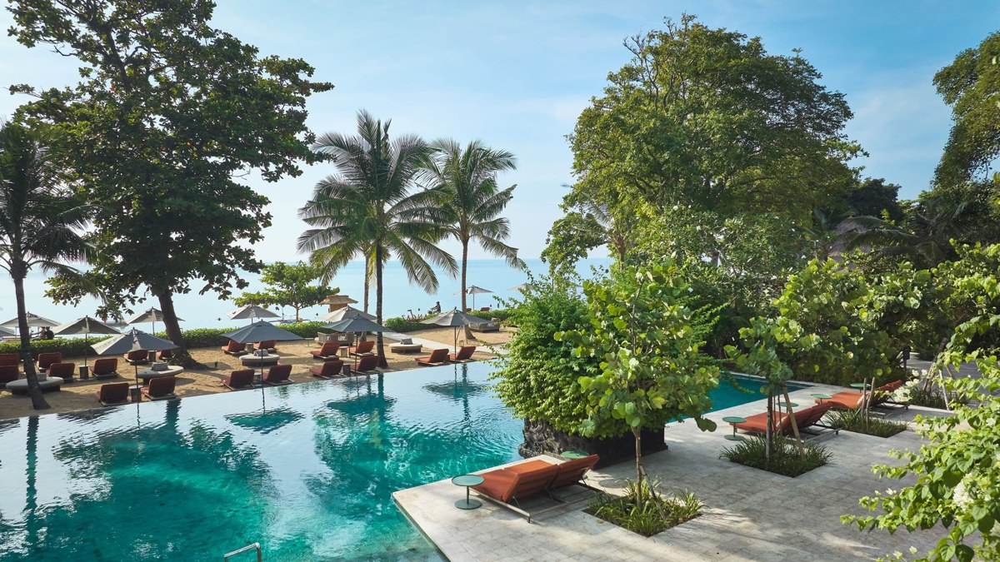
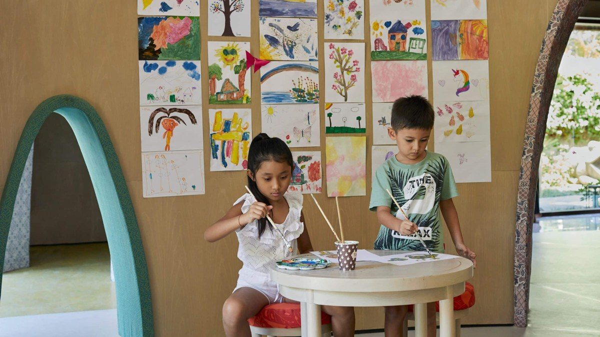
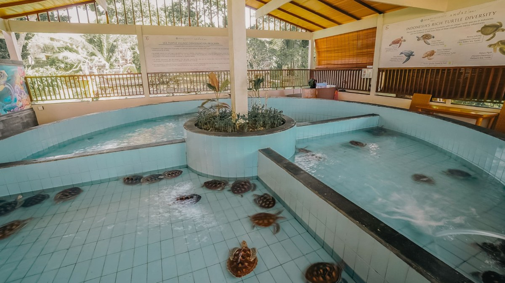
메인 수영장과 어린이 수영장에서 물놀이를 하고, 리조트 앞 사누르 해변을 산책해요.
그림 그리기 등 어린이 활동. 아이들 7세·12세 모두 안내 연령에 해당해요. 현재 공식 안내는 09:00–18:00, 공식 게시 PDF는 투숙 어린이 첫 2시간 무료를 안내합니다. 일부 공예 활동은 별도 유료이고, 11월 이용 조건·사전 예약은 호스트에게 확인하세요.
안다즈와 하얏트 리젠시 사이의 보호 공간에서 거북이를 관찰하고 먹이 주기·공예 활동에 참여해요. 먹이 주기는 유료이며, 방생 가능 날짜와 참가 비용은 별도 문의하세요.
바틱, 야자잎 엮기, 론타르 글쓰기 등 발리 문화를 직접 체험해요. 당일 프로그램과 비용은 호스트에게 확인하세요.
일출 스트레칭·요가, 수중 운동 등이 공식 일일 프로그램에 있어요. 숙소 밖 요가 계획과 별개의 선택 활동이에요.
인접한 하얏트 리젠시의 스파·웰니스 시설. 트리트먼트는 예약하고, 스파의 성인 전용 수영장은 가족 수영장과 구분해서 이용해요.
참여하고 싶은 활동은 체크인 때 호스트에게 날짜·소요 시간·비용을 확인하세요. 11월 4일 오전에는 GrabXL로 우붓으로 이동합니다.
Komaneka at Bisma · 숲을 바라보는 수영장과 손으로 만드는 체험
Jalan Bisma, Ubud · 예약하신 숙소
Family Suite
128㎡ · 침실과 휴식 공간 · 전용 발코니 · 논과 계곡 전망. 공식 안내는 킹 또는 트윈 침대와 추가 침대 구성입니다.
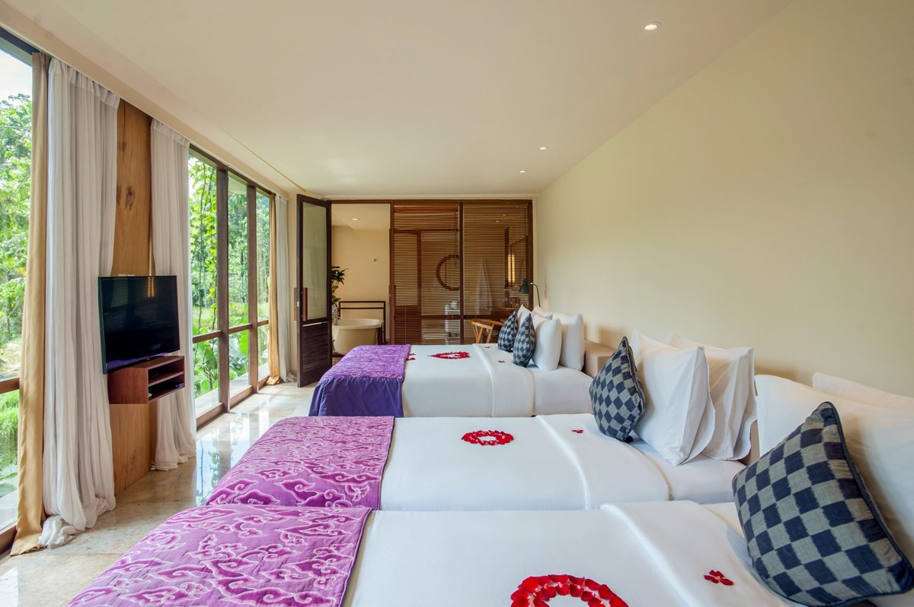
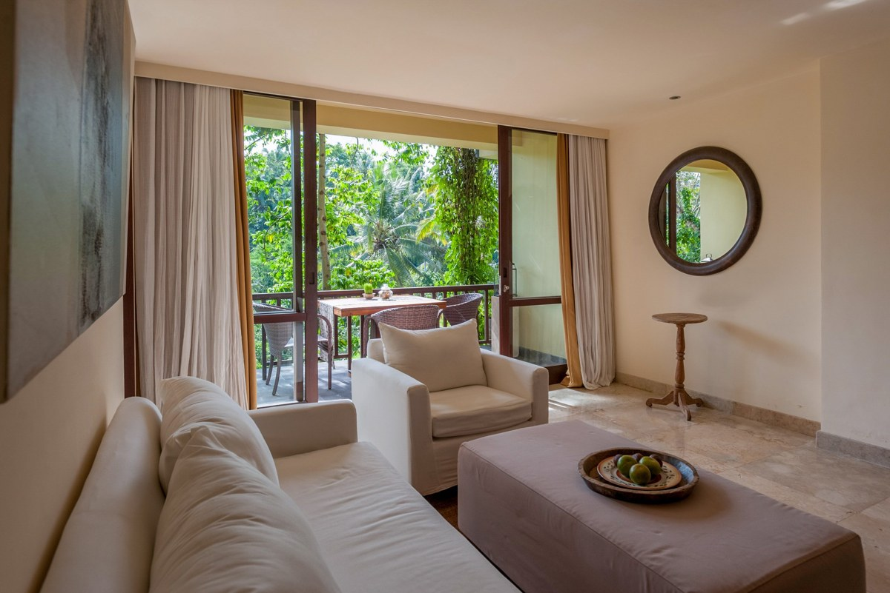
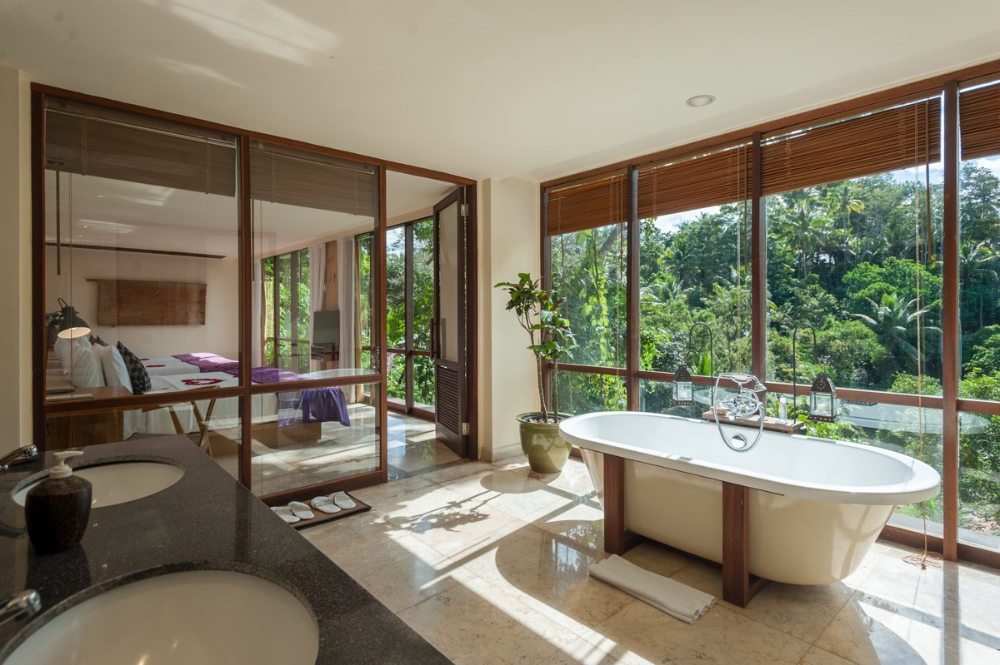
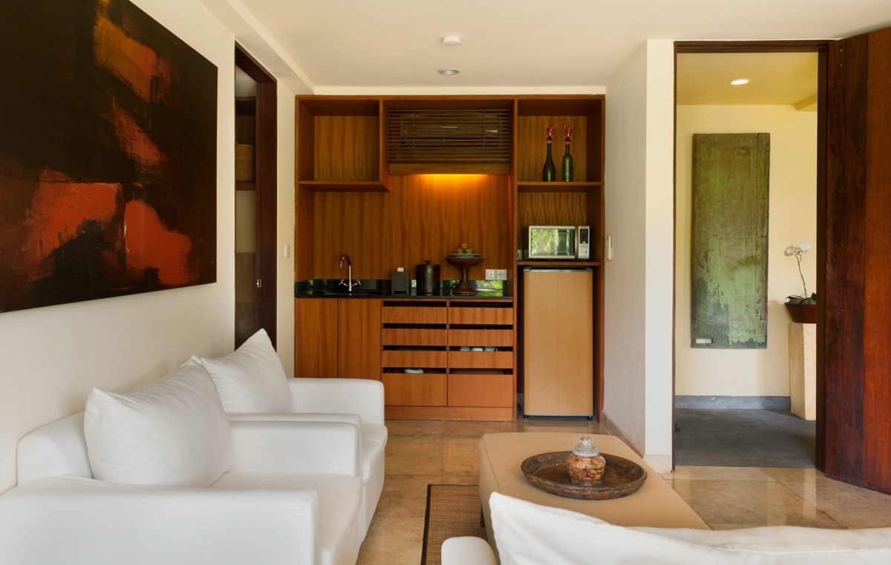
해당 객실 유형의 공식 대표 사진입니다. 실제 배정 객실의 배치와 전망은 달라질 수 있어요.
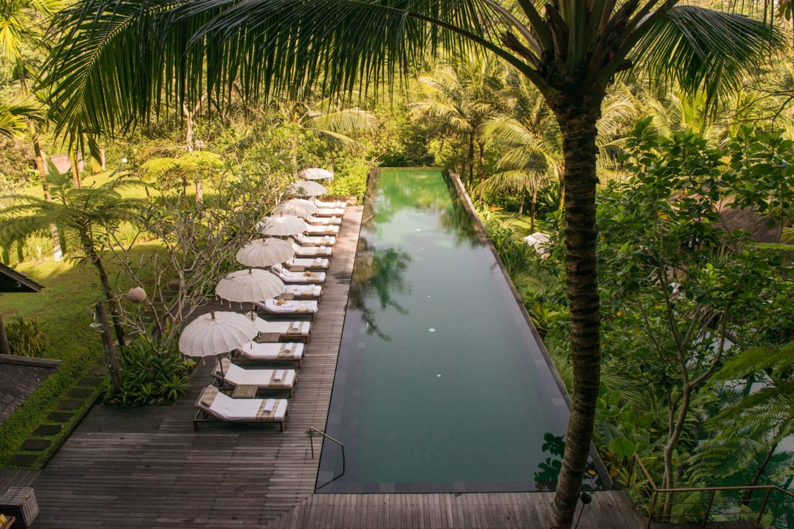
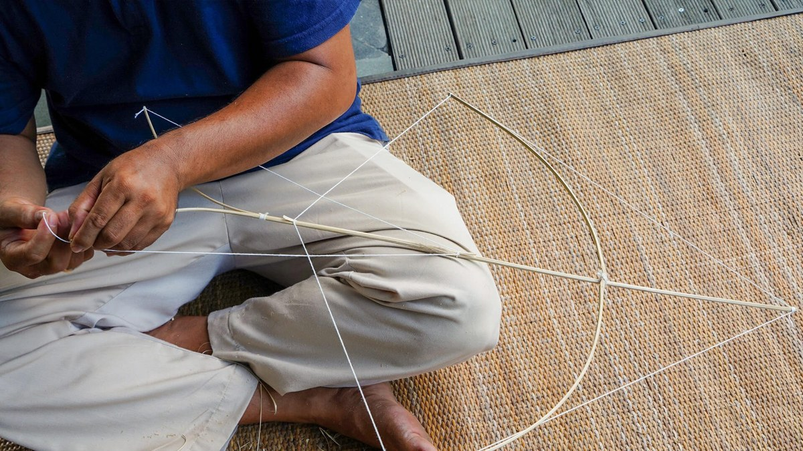
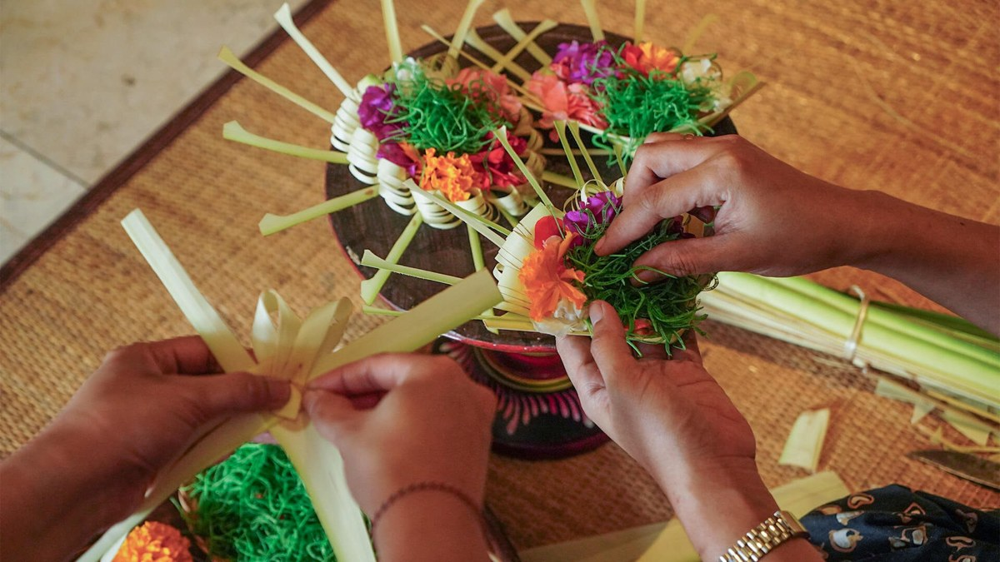
투어 사이에 수영을 하거나 풀사이드에서 쉬어 가요. 사진은 리조트 수영장이며 객실 전용 풀 사진이 아니에요.
아이들과 연의 모양을 만들며 발리의 놀이 문화를 배워요. 비스마 공식 체험 페이지에서 무료 프로그램으로 안내하며, 프런트에서 참여 시간을 확인하세요.
손과 몸의 움직임을 따라 해 보는 발리 전통 춤 수업. 공식 페이지는 매일 제공한다고 안내하며, 시간과 비용은 예약할 때 확인하세요.
꽃과 잎으로 차낭 공양물을 만들며 발리의 일상 문화를 알아봐요. 진행 시간과 참가 조건은 프런트에 문의하세요.
나무를 다루는 전통 공예 체험. 아이들의 참여 가능 연령과 도구 사용 방식은 프런트에서 확인하세요.
공식 게스트 안내에는 비스마에서 수·토요일 15:30–17:00 수업을 안내하고 있어요. 이번 숙박 기간에는 11월 4일·7일이 해당하며 다른 일정과 비교 후 참여 여부를 결정하세요. 최신 운영 여부와 비용은 확인이 필요해요.
숲과 강 주변의 스파에서 마사지·페이셜·바디 스크럽을 받아요. 현재 안내 시간은 10:00–19:00이며, 희망일 하루 전 예약을 권장해요.
이 목록은 숙소에서 선택할 수 있는 활동이며 예약 확정 일정은 아닙니다. 프런트에 원하는 체험을 문의하세요. 11월 8일 오전 체크아웃 후 남부 투어와 공항 이동이 예정되어 있습니다.
사진 출처: Andaz Bali / Hyatt, Komaneka 공식 홈페이지. 사진을 누르면 크게 볼 수 있어요. 프로그램·연령·비용은 숙박일의 운영 안내를 우선합니다.
제공한 예약표의 항목별 금액입니다.
17:50 인천 출발(KST) → 23:55 발리 도착(WITA)
인천(ICN) 제2터미널 → 덴파사르(DPS) 국제선 터미널 I
Boeing 787-10 · 비행 7시간 5분 · 일반석(U) / 일반석 세이버
11월 8일 23:50 발리 출발(WITA) → 11월 9일 07:45 인천 도착(KST)
덴파사르(DPS) 국제선 터미널 I → 인천(ICN) 제2터미널
Boeing 787-9 · 비행 6시간 55분 · 일반석(Q) / 일반석 세이버
표시 시각은 각 공항 현지시간입니다. 인천 도착은 다음 날인 11월 9일입니다.
예약번호와 개인별 좌석은 개인 보관 항공권에서 확인하세요.
대한항공 예약 조회 ↗10월 31일 · 23:55 항공 도착
Agoda 예약 · Viator 전자 바우처 · Q Destination Indonesia 운영
바우처는 통상 30–60분이 걸린다고 안내합니다. 항공 도착은 10월 31일 23:55이며 실제 차량 탑승은 입국 절차 후입니다. 기존 픽업 바우처의 시작 시간은 11월 1일 00:00이므로 변경된 항공 도착 시간과 미팅 일정을 업체에 확인하세요.
예약자 이름이 적힌 표지판을 든 기사를 찾아요. 기사는 입국·수하물 수령 중 WhatsApp으로 위치를 확인합니다.
휴대폰에 저장한 전자 바우처를 준비하세요. 바우처에는 안다즈 발리 하차와 드랍 배정 시간 30분이 안내되어 있습니다.
이용 인원 총 4명 · 바우처에는 “4 adults”로 표기
우리 가족 성인 2명 + 아이 2명(12·7세) · 큰 수하물 2개
포함 안내 항공편 모니터링, 에어컨 전용 차량, 기사 미팅, 연료·공항 주차·통행료, 생수·Wi-Fi
짐 확인 과다 수하물·서핑보드 등은 추가 비용 항목입니다. 차량 크기와 큰 캐리어 2개 수용 여부는 업체에 확인하세요.
변경·취소: Agoda 고객센터 customerservice@agoda.com · +44 20 3027 7900. 바우처의 일반 문구 “출발 60분 전 픽업”은 도착 미팅 안내와 함께 업체에 확인하세요.
받은 자료: 최종 일정·가격표, 공항 픽업 바우처, 메이슨 확정서 PDF, 체크아웃 투어 인보이스, 대한항공 예약 정보, 지정 구글맵. 메이슨 Jumbo Wash Tour 원본 확정서는 추가 확인했습니다. 체크아웃 투어의 코스·예약금·현장 잔금도 확인했습니다. 첨부 항공권 이미지로 왕복 편명·시간·터미널·기종을 확인했습니다. 숙박 및 나머지 체험 원본 바우처는 없어 모든 예약 조건을 확정할 수는 없습니다.
지도·메뉴·숙소 체험은 공식 안내 기준이며, 실제 방문일 운영과 요금은 달라질 수 있습니다. 기존 PDF는 최신 웹 일정과 다릅니다.
안다즈 공식 객실 정원 ↗ 메이슨 상품별 포함 사항 ↗PDF는 이전 일정본입니다. 이번 투어 수정과 11월 4일 추천 코스는 웹 안내서 기준으로 확인하세요.
여행 서류 안내를 불러오는 중입니다.